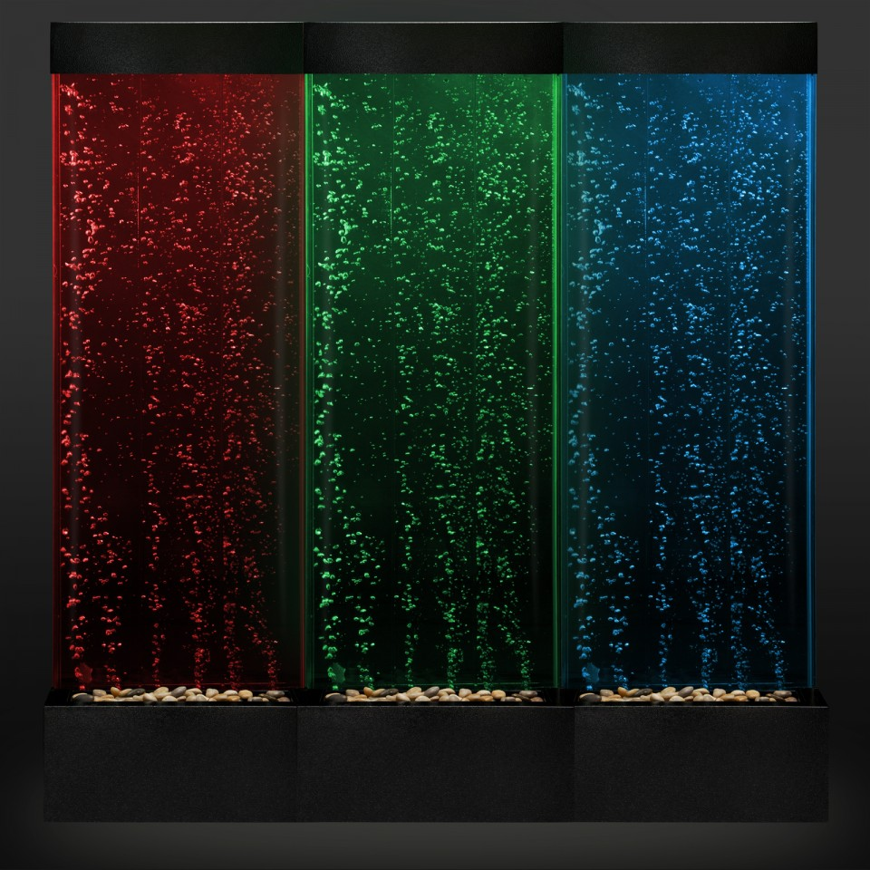
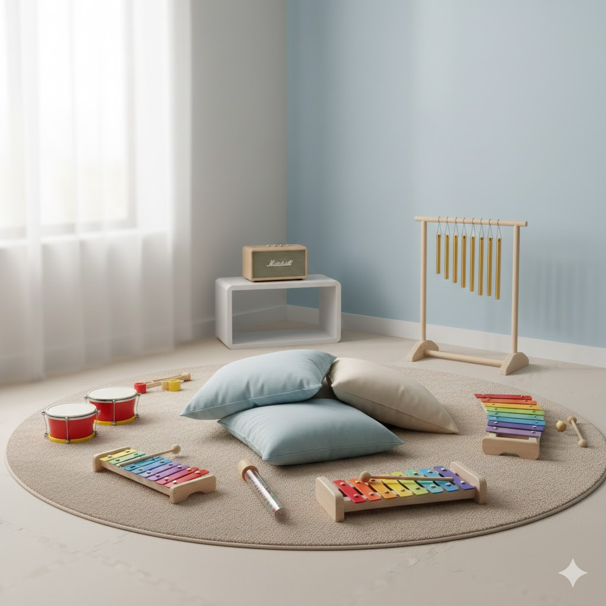

Stimoli visivi
Pannelli luminosi, proiezioni e giochi di luce che permettono di lavorare sulla percezione visiva in un contesto controllato e rassicurante.

Tattile & visivo
Fibre ottiche e colonne di bolle che offrono stimoli visivi e tattili graduali, utili per esplorare colori, vibrazioni e sensazioni in sicurezza.

Zona relax
Poltrone relax, cuscini e lettini pensati per creare routine di rilassamento personalizzate e momenti di pausa protetta.

Stimoli uditivi
Angolo musicale con strumenti semplici e suoni morbidi per intervenire sulla sensibilità uditiva e favorire l'ascolto attivo.